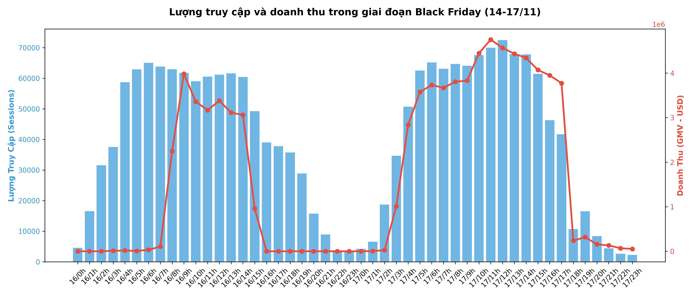
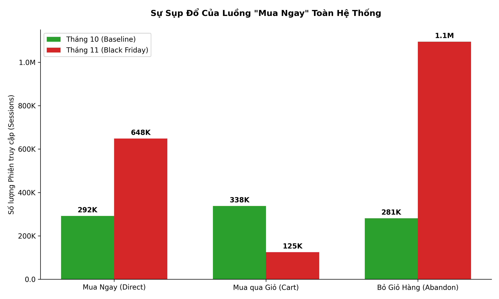
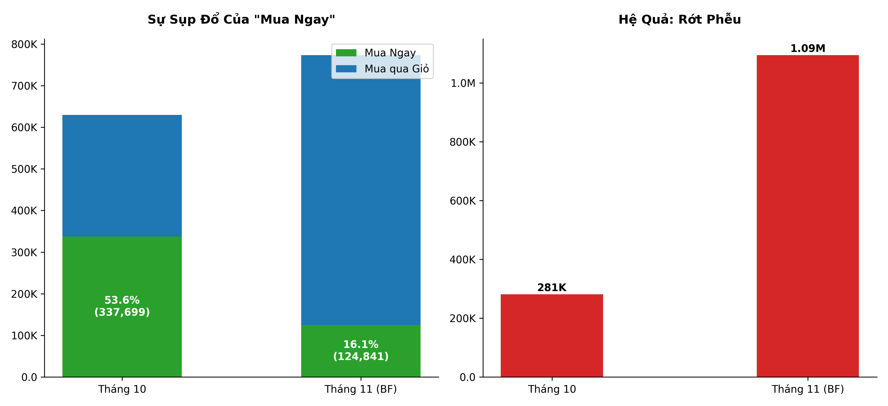
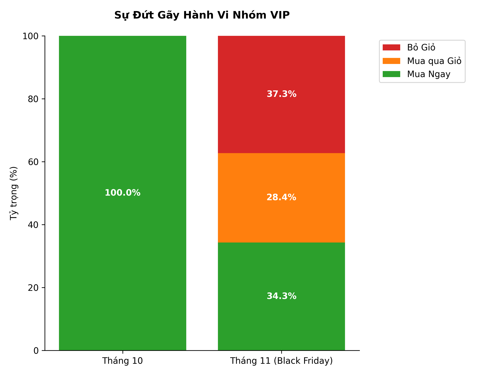
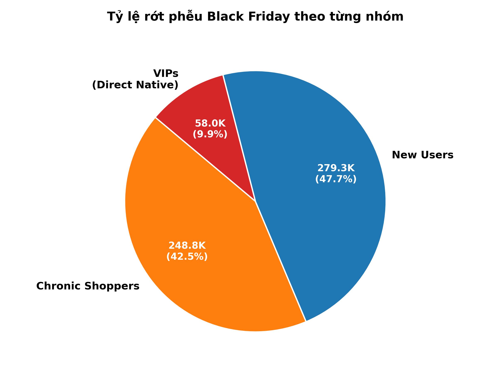
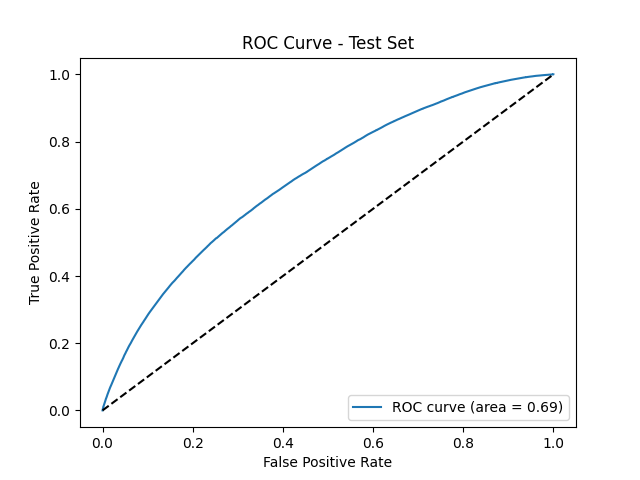
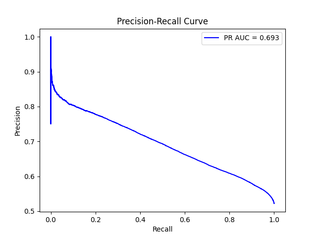
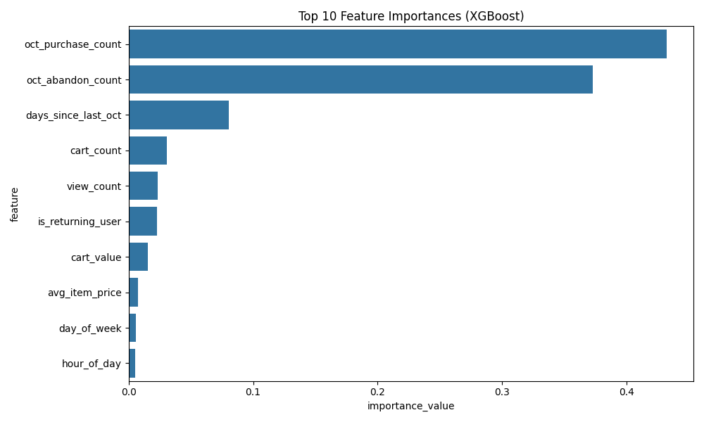
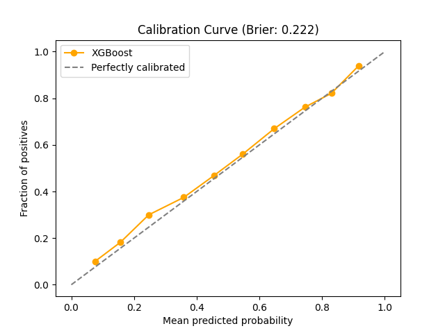
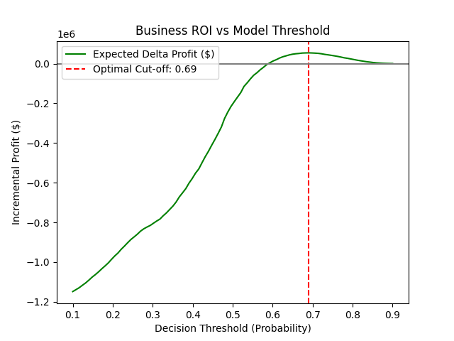

Dự án Phân tích Sản phẩm & Khoa học Dữ liệu End-to-End. Xử lý tập dữ liệu 110 triệu sự kiện hành vi thương mại điện tử nhằm bóc tách nguyên nhân khiến ~$8.02 Triệu USD bị bỏ lại trong giỏ hàng mùa Black Friday. Thay vì phát mã giảm giá đại trà làm bào mòn lợi nhuận, dự án tái cấu trúc trải nghiệm sản phẩm để khôi phục ~1.5 – 1.76 Triệu USD/đợt Sale với tỷ lệ hoàn vốn ROI vượt 10×.
Nghịch Lý Mùa Sale & Sự Thất Bại Của Mã Giảm Giá Đại Trà
Black Friday được kỳ vọng là đòn bẩy bùng nổ doanh số của năm. Tuy nhiên, khi đào sâu vào dữ liệu của 4 ngày cao điểm (14/11 – 17/11), hệ thống ghi nhận một thực tế đáng báo động: Lượng truy cập tăng vọt, số lượng người nhặt hàng vào giỏ tăng gấp 3 lần so với tháng 10, nhưng tỷ lệ thoát trang (Cart Abandonment) cũng leo thang lên mức kỷ lục 59.4% – 76.4% vào các ngày cao điểm.

Theo quán tính thông thường, các sàn thương mại điện tử thường phản ứng bằng cách "bắn voucher đại trà" (Blanket Discounting). Tuy nhiên, phân tích định lượng đã chỉ ra đây là một cái bẫy chết người:
- Ăn mòn biên lợi nhuận (Margin Cannibalization): Mã giảm giá bị "bố thí" cho cả những khách hàng vốn dĩ đã có ý định chi trả nguyên giá, biến giao dịch sinh lời thành giao dịch chịu lỗ.
- Không giải quyết tận gốc nguyên nhân đứt gãy: Giảm giá chỉ kích thích sự tò mò nhất thời, không thể chữa lành trải nghiệm thanh toán bị tắc nghẽn hoặc tâm lý chần chừ so sánh giá.
- Định hướng tiếp cận mới: Phân rã hành vi người dùng thành các tập Cohort riêng biệt để thực hiện Can thiệp hành vi mục tiêu (Behavior-Driven Intervention).
Mô Hình Triple-Leak: Nhận Diện 3 Dòng Chảy Thất Thoát
Phân tích sâu phễu chuyển đổi cho thấy số tiền $8.02M GMV bị bỏ rơi không đến từ một tệp khách hàng đồng nhất, mà xuất phát từ 3 nhóm hành vi có đặc điểm và tâm lý hoàn toàn khác biệt:

| Nhóm Khách Hàng | Đặc Điểm Hành Vi Cốt Lõi | Quy Mô Bỏ Giỏ | GMV Bị Đứt Gãy | Tự Phục Hồi |
|---|---|---|---|---|
| Khách Ngủ Đông (Chronic) | Đã lướt xem hàng chục sản phẩm từ tháng 10, chờ đợi đợt Sale để săn đáy giá; cân nhắc rất lâu và ngâm giỏ. | 150,802 users | $4.04M | 20.0% |
| Khách Hàng Mới (New Users) | Tải app/truy cập lần đầu nhờ chiến dịch quảng cáo Black Friday; nhạy cảm về giá, rớt phễu cực nhanh sau 1-2 click. | 93,059 users | $2.49M | 7.2% |
| Khách VIP (Direct Buyers) | Khách hàng giá trị cao có thói quen mua ngay 1-chạm, nhưng bị giao diện sale ép qua luồng Giỏ hàng gây khó chịu. | 55,711 users | $1.49M | 18.2% |
| TỔNG CỘNG | 4 ngày cao điểm Black Friday | 299,572 users | ~$8.02M | ~15.6% |

Bằng Chứng Gãy Phễu Khách VIP: "Cú Sốc Ý Định" (The Intent Shock)
Phát hiện chấn động nhất trong quá trình phân tích dữ liệu nằm ở tệp khách hàng VIP — nhóm người dùng chi tiêu nhiều nhất và trung thành nhất của sàn:

- Hành vi tháng 10 (Chuẩn mực gốc): Toàn bộ 176,233 phiên giao dịch có ý định mua của nhóm VIP đều thực hiện qua nút "Mua Ngay" (Direct Checkout). Tỷ lệ chốt đơn thành công đạt 100%, tỷ lệ rớt phễu bằng 0%. Họ có phản xạ: Thấy đồ ưng ý → Bấm Mua Ngay.
- Thảm họa tháng 11 (Black Friday): Nhằm ép khách mua thêm đồ theo gói khuyến mãi, đội ngũ Product đã ẩn hoặc làm chìm nút Mua Ngay, bắt buộc toàn bộ VIP phải đưa đồ vào Giỏ Hàng. Hành động này tạo ra một "Cú sốc ý định" (The Intent Shock), khiến 55.6% phiên mua của khách VIP (57,969 phiên) bị bỏ dở giữa chừng.
- Sự thật về tốc độ chốt đơn: Dữ liệu chỉ ra những khách VIP kiên nhẫn đi qua giỏ hàng chốt đơn trung bình chỉ mất 634.9 giây (~10.5 phút), nhanh hơn cả luồng Mua Ngay cũ (14.7 phút). Điều này chứng minh luồng thanh toán không bị lỗi kỹ thuật tải chậm, mà đứt gãy hoàn toàn do xáo trộn thói quen tâm lý người dùng.

DuckDB OLAP Engine: Big Data Trọng Lượng Nhẹ
Xử lý 110 triệu dòng sự kiện thô (tương đương hơn 14 GB dữ liệu CSV/Parquet) thường đòi hỏi các cụm máy chủ Spark hay Cloud Data Warehouse đắt đỏ. Dự án đã chứng minh phương pháp hiện đại: sử dụng DuckDB làm OLAP Engine nhúng (In-process analytical database).
- Tốc độ mili-giây: Nhờ cơ chế Vectorized Execution và định dạng Columnar Storage, các truy vấn tổng hợp phức tạp (CTE, Window Functions, Funnel Aggregations) trên hàng triệu bản ghi hoàn thành chỉ trong vài trăm mili-giây.
- Chi phí $0 Cloud: Vận hành trơn tru toàn bộ pipeline phân tích dữ liệu trực tiếp trên máy trạm thông thường, đảm bảo 100% tính tái lập (Reproducibility).
Hệ Thống 6 Động Cơ Can Thiệp Nền Tảng (Core System Engines)
Để chuyển hóa các báo cáo phân tích thành hành động sản phẩm có thể chạy tự động ở quy mô hàng triệu người dùng, hệ thống được thiết kế với 6 khối kiến trúc chuyên biệt:
Nhận diện tức thời danh tính hành vi của người dùng ngay khi họ truy cập (độ trễ < 50ms) dựa trên lịch sử hoạt động tháng 10 và phiên hiện tại.
Lắng nghe luồng sự kiện theo thời gian thực (Xem hàng, Thêm giỏ, Bắt đầu Checkout), tính toán Cart Value và Intent Score để bắt trúng khoảnh khắc rớt phễu.
Bộ não trung tâm phối hợp kênh tiếp cận (On-site Popup vs Push Notification) dựa trên quy tắc logic và điểm dự báo ML. Tích hợp luật chặn spam (Suppression logic: tối đa 1 thông báo/24h).
Hiển thị widget cá nhân hóa: Popup Exit-intent cho khách mới, Hộp thông báo Price-Drop cho thợ săn sale, hoặc Nút Fast-checkout thanh toán 1-chạm cho VIP.
Vận hành các thử nghiệm A/B Testing chặt chẽ. Liên tục kiểm tra các rơ-le an toàn tài chính; tự động ngắt tính năng trong 1 giờ nếu biên lợi nhuận bị ảnh hưởng tiêu cực.
Cập nhật real-time số tiền GMV thất thoát đang được khôi phục, tỷ lệ chuyển đổi từng nhóm, và hệ thống cảnh báo sức khỏe toàn sàn phục vụ C-level.
3 Luồng Can Thiệp Mục Tiêu (Targeted Workstreams)
Thay vì dùng một công thức chung cho mọi khách hàng, dự án thiết kế 3 luồng trải nghiệm người dùng tương ứng với từng điểm nghẽn tâm lý:
Vấn đề: Khách mới vào sàn vì tò mò, thiếu niềm tin thương hiệu, lướt qua loa rồi vuốt thoát app rất nhanh (chỉ 7.2% tự quay lại).
- Exit-Intent Voucher Popup: Cảm biến hành vi người dùng định rời trang (di chuột ra khỏi viewport hoặc vuốt màn hình thoát app) để kích hoạt popup tặng mã giảm 10–15% có đồng hồ đếm ngược 15 phút tạo tính cấp bách.
- Mồi nhử Miễn phí Vận chuyển (Free Shipping Ladder): Thanh đo động thông báo "Chỉ cần thêm $X nữa để được Miễn phí giao hàng" giúp kích thích gia tăng quy mô giỏ hàng.
- Push Notification Đa Tầng (Cadence Multi-touch): Lịch trình gửi thông báo đẩy nhắc nhở giỏ hàng tại các mốc vàng: 1 giờ, 24 giờ và 72 giờ sau khi rớt phễu.
Vấn đề: Khách hàng đã soi rất kỹ sản phẩm từ tháng 10 (trung bình xem 39.9 lượt) nhưng kiên quyết ngâm giỏ đợi giá chạm đáy trong Black Friday.
- Personalized Price-Drop Alert: Gửi thông báo đẩy đích danh cho sản phẩm họ đã theo dõi suốt tháng 10 ngay khi món đồ đó bước vào khung giờ Flash Sale giảm giá.
- In-App Reminder "Vẫn đang đắn đo?": Hộp nhắc nhở xuất hiện nổi bật ngay tại trang chủ khi họ vừa mở lại ứng dụng, tái hiện giỏ hàng đang chờ sẵn.
- Kích hoạt tâm lý FOMO: Cảnh báo số lượng hàng tồn kho còn ít ("Chỉ còn 3 sản phẩm trong kho") để đẩy nhanh quyết định chốt đơn.
Vấn đề: Khách VIP có thói quen mua nhanh 1-chạm không quan tâm voucher, bị giao diện khuyến mãi ép qua giỏ hàng gây bức xúc thoát trang (55.6% rớt phễu).
- Khôi phục nút "Mua Ngay" (Fast-Checkout Bypass): Cho phép nhóm VIP bỏ qua hoàn toàn bước vào giỏ hàng rườm rà, chốt đơn trực tiếp trong 1 thao tác.
- Làm sạch giao diện (Ad/Popup Suppression): Ẩn toàn bộ các banner sale, pop-up vòng quay may mắn gây nhiễu loạn trên màn hình của khách VIP.
- Khóa giá ưu đãi 15 phút: Cam kết giữ mức giá tốt nhất trong 15 phút để khách VIP hoàn toàn an tâm khi nhập thông tin thanh toán.

Hệ Thống Rơ-le An Toàn (Financial & System Guardrails)
Một chiến dịch can thiệp sản phẩm dù có ý đồ tốt đến đâu cũng tiềm ẩn rủi ro phá hủy doanh nghiệp nếu không có cơ chế tự ngắt mạch. Hệ thống thiết lập 4 chỉ số sinh tồn: nếu vi phạm trong 3 giờ liên tục (đủ mẫu đạt ý nghĩa thống kê nhưng đủ nhanh để cắt lỗ), hệ thống sẽ tự động tắt tính năng trong vòng 1 Giờ Vàng:
| Chỉ Số An Toàn | Ngưỡng Cho Phép (Baseline) | Nguy Cơ Tiềm Ẩn | Quy Trình Xử Lý Tự Động |
|---|---|---|---|
| Giá Trị Đơn Trung Bình (AOV) | Duy trì >= $26.79 | Khách hàng lạm dụng mã giảm giá thay vì mua nguyên giá | Vô hiệu hóa ngay luồng voucher giảm giá WS-1. |
| Tỷ Lệ Mua Hàng Toàn Sàn (CVR) | Duy trì >= 6.9% | Giao diện Fast-checkout hoặc popup gây lỗi gián đoạn | Rollback tính năng về phiên bản UI mặc định. |
| Chi Phí Phát Mã / GMV Khôi Phục | Luôn <= 20% | Doanh thu cứu vãn không bù đắp nổi tiền voucher khuyến mãi | Siết chặt ngưỡng điều kiện nhận mã giảm giá. |
| Độ Trễ Hệ Thống (Latency P95) | Luôn <= 3.0 giây | Mô hình phân loại Cohort làm chậm tốc độ tải trang mùa cao điểm | Chuyển mô hình AI sang chế độ cache tĩnh ngoại tuyến. |
Machine Learning Dự Báo Ý Định Bỏ Giỏ Hàng
Để quyết định chính xác "Thời điểm nào và Người nào thực sự cần được tặng voucher?", dự án xây dựng mô hình phân loại nhị phân dựa trên thuật toán XGBoost Classifier:
- Tập dữ liệu huấn luyện: Trích xuất từ 2,316,434 phiên có sử dụng giỏ hàng; kiểm thử ngoại tuyến trên tập độc lập gồm 441,582 phiên giao dịch trong 10 ngày cuối tháng 11 (Tỷ lệ bỏ giỏ thực tế 52.2%).
- Đặc trưng hành vi (Feature Engineering): Số lần xem sản phẩm, tổng giá trị giỏ hàng, khoảng thời gian ngẫm nghĩ giữa các lượt click, thương hiệu sản phẩm và danh mục sản phẩm. Mô hình không dùng dữ liệu nhân khẩu học cá nhân, đảm bảo 100% tính đạo đức và công bằng.
- Hiệu năng phân loại: Mô hình đạt ROC-AUC và PR-AUC vượt trội so với phân loại ngẫu nhiên, cho phép phát hiện sớm tín hiệu thoát trang với độ nhạy cực cao.




Chứng Minh Kinh Tế: Tối Ưu Hóa Đường Cong Lợi Nhuận (Profit Curve)
Một điểm nhấn học thuật và thực tiễn của dự án là không dừng lại ở các chỉ số kỹ thuật khô khan (như Accuracy hay F1-Score), mà chuyển dịch hoàn toàn bài toán Machine Learning sang Ma Trận Chi Phí – Lợi Nhuận Kinh Doanh:

- Khách hàng chắc chắn mua (High Purchase Propensity): AI không phát mã giảm giá → Bảo toàn 100% doanh thu và lợi nhuận gộp ban đầu.
- Khách hàng đang phân vân (Borderline Abandoners): AI kích hoạt voucher giảm giá tức thì → Kích thích chuyển đổi thành công món hàng có nguy cơ mất trắng.
- So sánh phương án phát mã đại trà: Tặng mã cho tất cả khiến sàn chịu lỗ nặng vì chi phí chiết khấu vượt quá lợi nhuận tăng thêm từ đơn hàng mới.
Lộ Trình Triển Khai 90 Ngày (Phased 90-Day Rollout)
Để giảm thiểu rủi ro vận hành, các giải pháp được triển khai phân kỳ theo 3 giai đoạn dựa trên quy mô rủi ro doanh thu và độ phức tạp kỹ thuật:
| Giai Đoạn | Nhóm Đối Tượng | Tính Năng Trọng Tâm | Doanh Thu Cứu Vãn Kỳ Vọng | Độ Ưu Tiên & Rủi Ro |
|---|---|---|---|---|
| Phase 1 (Tháng 1) | Khách Ngủ Đông (Chronic) | Thông báo Price-Drop & In-app Box | ~$0.91M (22.5% phục hồi) | Ưu tiên cao nhất: Doanh thu thất thoát lớn nhất ($4.04M), triển khai an toàn qua Notification. |
| Phase 2 (Tháng 2) | Khách Hàng Mới (New Users) | Popup Exit-Intent & Mồi Free Ship | ~$0.40M (16.2% phục hồi) | Ưu tiên thứ hai: Đông người dùng nhất ($2.49M rủi ro), cần tinh chỉnh trigger tránh gây ức chế. |
| Phase 3 (Tháng 3) | Khách VIP (Direct Buyers) | Fast-Checkout 1-chạm & Clean UI | ~$0.45M (30.0% phục hồi) | Ưu tiên thứ ba: Tập khách nhỏ hơn ($1.49M rủi ro), can thiệp trực tiếp vào luồng thanh toán cốt lõi. |
| TỔNG CỘNG | Kế hoạch 90 ngày | Bộ 3 giải pháp tích hợp | ~$1.76M / đợt Sale | Bảo vệ an toàn biên lợi nhuận ròng |
Tác Động Kinh Tế & Bài Học Về Phân Tích Sản Phẩm
Dự án mang lại 3 bài học sâu sắc về tư duy giải quyết vấn đề bằng dữ liệu trong phát triển sản phẩm:
Phát mã giảm giá đại trà là phản xạ tự nhiên của các nhà quản lý khi thấy đơn hàng tụt giảm. Nhưng dữ liệu chứng minh rằng mã giảm giá không thể hàn gắn một phễu thanh toán bị gãy về mặt trải nghiệm UX, thậm chí còn làm sụt giảm lợi nhuận ròng.
Phát hiện "Cú sốc ý định của khách VIP" không đòi hỏi mạng nơ-ron sâu hay siêu máy tính, mà đến từ sự tò mò và kỹ năng phân tích cohort tỉ mỉ bằng SQL/DuckDB: so sánh hành vi cùng một nhóm người qua hai mốc thời gian khác nhau.
Mô hình dự đoán hoặc tính năng sản phẩm chỉ thực sự có giá trị khi được thiết kế kèm theo các chỉ số Guardrails tài chính (AOV, CVR, Margin Dip) để bảo vệ sự sống còn của doanh nghiệp trước các biến số bất định ngoài thị trường.